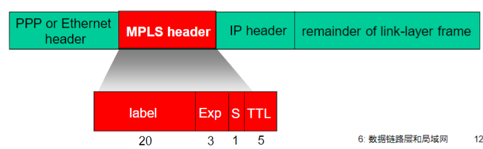
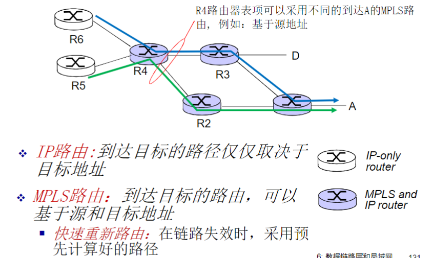
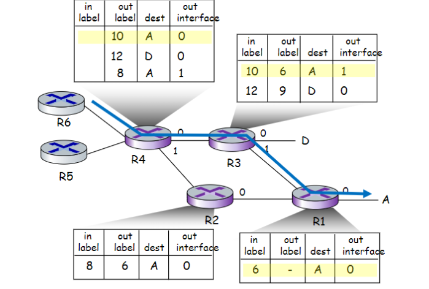

互联网计算-06链路层和局域网
总结
数据链路层服务背后的原理：
- 检错、纠错
- 共享广播式信道：多路访问
- 链路编址
各种链路层技术的实例和实现
- Ethernet
- 交换式 LANs, VLANs
- 虚拟成链路层的网络：MPLS
综合：一个 web 页面请求的日常场景
引入
术语：
- nodes: 主机、路由器
- links: 沿着通信路径，连接相邻节点的通信信道
- 有线、无线
- 局域网 LANs
- 第二层协议数据单元 “帧 frame”，封装数据报
数据链路层负责从一个节点通过链路将（帧中的）数据报发送到相邻的物理节点
上下文：
- 数据报（分组）在不同链路上以不同的链路协议传输
- 不同的链路层协议提供不同的服务
类比：

链路层：服务
成帧，链路接入：
- 将数据报封装在帧中，加上帧头、帧尾部
- 如果采用的式共享性介质，信道接入获得信道访问权
- 在帧头部使用“MAC”地址来标识源和目的（不同于 IP 地址）
在相邻两个节点完成可靠数据传输
- 在低错误率的链路上（光纤和双绞线电缆）很少使用
- 在无线链路经常使用：出错率高
流量控制：
- 使得相邻的发送和接收方节点的速度匹配
错误检测：
- 差错由信号衰减和噪声引起
- 接收方检测处的错误：通知发送方进行重传或丢弃帧
差错纠正：
- 接收端检查和纠正 bit 错误，不通过重传来纠正错误
半双工和全双工：
- 半双工：链路可以双向传输，但一次只有一个方向
链路层实现的位置
- 在每个主机上
- 链路层功能实现在 NIC 或芯片组
- 接到主机的系统总线上
- 硬件、软件和固件的综合体
差错检测和纠正
错误检测
EDC=差错检测和纠正位（冗余位）
D=由差错检测保护的数据，可以包含头部字段
错误检测不是 100%可靠的
- 协议会漏检一些错误，但是很少
- 更长的 EDC 字段可以得到更好的检测和纠正效果
奇偶校验：
Internet 校验和
目标：检测在传输报文段时的错误（如位翻转）
发送方：
- 将报文段堪称 16bit 整数
- 报文段的检验和：和 1’ 的补码和
- 发送方将 checksum 的值放在 ‘UDP 校验和’ 字段
接收方：
- 计算接收到的报文段的校验和
- 检查是否与携带的校验和字段值一致
- 不一致：检出错误
- 一致：没有检出错误，但可能还是由错误
- ps. 更简单的检查：全部加起来看是不是全 1
检验和：循环冗余校验 CRC
例：
多点访问协议
两种类型的链路（一个子网内部链路连接形式）：
- 点对点
- 以太网交换机和主机之间的点对点链路
- 拨号访问的 PPP
- 广播（共享线路或媒体）
- 传统以太网
- HDC 上行链路
- 802.11 无线局域网
单个共享的广播型链路
2 个或更多站点同时传送：冲突
- 多个节点在同一个时刻发送，则会收到 2 个或多个信号叠加
多路访问协议（multiple access protocol MAC）
- 分布式算法 - 决定节点如何使用共享信道，即决定节点什么时候可以发送
- 关于共享控制的信道必须借助信道本身传输
- 没有带外的信道，各节点使用其协调信道使用
理想的多路访问协议
给定：Rbps 的广播信号
必要条件
- 当一个节点要发送时，可以 R 速率发送
- 当 M 个节点要发送，每个可以以 R/M 的平均速率发送
- 完全分布的
- 没有特殊节点协调发送
- 没有时钟和时隙的同步
- 简单
MAC 协议：分类
- 信道划分
- 把信道划分成小片（时间、频率、编码）
- 分配片给每个节点专用
- 随机访问
- 信道不划分，允许冲突
- 冲突后恢复
- 依次轮流
- 节点依次轮流
- 但是有很多数据传输的节点可以获得较长的信道使用权
信道划分 MAC 协议
TDMA
- 轮流使用信道，信道的实践分为周期
- 每个站点使用每周期中固定的时隙 (长度=帧传输时间) 传输帧
- 如果站点无帧传输，时隙空闲->浪费
FDMA
- 信道的有效频率范围被分成一个个小的频段
- 每个站点被分配一个固定的频段
- 分配给站点的频段如果没有被使用，则空闲
码分多路访问 CDMA
- 所有站点在整个频段上同时进行传输, 采用编码原理加以区分
- 完全无冲突
- 假定: 信号同步很好, 线性叠加
随机存取协议
当节点有帧要发送时
- 以信道带宽的全部 R bps 发送
- 没有节点间的预先协调
两个或更多节点同时传输，会发生 ➜ 冲突 “collision”
随机存取协议规定:
- 如何检测冲突
- 如何从冲突中恢复（如：通过稍后的重传）
随机 MAC 协议:
- 时隙 ALOHA
- ALOHA
- CSMA, CSMA/CD, CSMA/CA
时隙 ALOHA
假设：
- 所有帧是等长的
- 时间被划分为相等的时隙，每个时隙可发送一帧
- 节点只在时隙开始时发送帧
- 节点在时钟上是同步的
- 如果两个或多个节点在一个时隙传输，所有的站点都能检测到冲突
运行：
- 当节点获取新的帧，在下一个时隙传输
- 传输时没有检测到冲突，成功
- 节点能够在下一时隙发送新帧
- 检测时如果检测到冲突，失败
- 节点在每一个随后的时隙以概率 p 重传帧直到成功
效率：当有很多节点，每个节点有很多帧发送时，x%的时隙是成功传输帧的时隙
- 假设 N 个节点，每个节点都有很多帧要发送， 在每个时隙中的传输概率是 p
- 一个节点成功传输概率是
- 任何一个节点的成功概率是
->最好情况：信道利用率 37%
CSMA（载波监听多路访问）
CSMA：在传输前先侦听信道
- 如果侦听到信道空闲，传送整个帧
- 如果侦听到信道忙，推迟传送
CSMA/CD：CSMA with collision detection
- 没有传完一个帧就可以在短时间内检测到冲突
- 冲突发生时则传输终止，减少对信道的浪费
- 冲突检测 CD 技术，有线局域网中容易实现
- 检测信号强度，比较传输与接收到的信号是否相同
- 通过周期的过零点检测
CSMA：冲突
冲突仍然可能发生
- 由传播延迟造成：两个节点可能侦听不到正在进行的传输
冲突：整个冲突帧的传输时间都被浪费了，是无效的传输 (红黄区域) - 注意： 传播延迟（距离）决定了冲突的概率
CSMA/CD
以太网 CSMA/CD 算法
- Ethernet 获取数据报，创建帧
- 发送前：侦听信道 CS
- 闲：开始传送帧
- 忙：一直等到闲再发送
- 发送过程中，冲突检测 CD
- 没有冲突: 成功
- 检测到冲突: 放弃, 之后尝试重发
- 发送方适配器检测到冲突，除放弃外，还将发送一个 jam 信号，所有听到冲突的适配器也是如此
- 强化冲突：让所有站点都知道冲突
- 如果放弃，适配器进入指数退避状态
- 在第 m 次失败后，适配器随机选择一个{0,1,2… 2^m-1}中 k，等待 k * 512 位时，转到步骤 2（二进制指数退避算法 exponential backoff）
无线局域网中的 MAC
802.11: CSMA – 发送前侦听信道
- 不会和其它节点正在进行的传输发生冲突
- 没有冲突检测
- 无法检测冲突：自身信号远远大于其他节点信号
- 目标：避免冲突
- 无法 CD，一旦发送一股脑全部发送完毕，不 CD
- 为了避免无 CD 带来的信道利用率低的问题，事前进行冲突避免
冲突避免
思想：允许发送方“预约”信道，而不是随机访问该信道: 避免长数据帧的冲突（可选项）
发送方首先使用 CSMA 向 BS 发送一个小的 RTS 分组
- RTS 可能会冲突（但是由于比较短，浪费信道较少）
BS 广播 clear-to-send CTS，作为 RTS 的响应
CTS 能够被所有涉及到的节点听到
- 发送方发送数据帧
- 其它节点抑制发送
——采用小的预约分组，可以完全避免数据帧的冲突
轮流 Taking Turns MAC 协议
信道划分 MAC 协议:
- 共享信道在高负载时是有效和公平的
- 在低负载时效率低下
- 只能等到自己的时隙开始发送或者利用 1/N 的信道频率发送
- 当只有一个节点有帧传时，也只能够得到 1/N 个带宽分配
随机访问 MAC 协议
- 在低负载时效率高：单个节点可以完全利用信道全部带宽
- 高负载时：冲突开销较大，效率极低，时间很多浪费在冲突中
轮流协议
- 有 2 者的优点!
轮询 polling
- 主节点邀请从节点依次传送
- 从节点一般比较“dumb”
- 缺点:
- 轮询开销：轮询本身消耗信道带宽
- 等待时间：每个节点需等到主节点轮询后开始传输，即使只有一个节点，也需要等到轮询一周后才能够发送
- 单点故障：主节点失效时造成整个系统无法工作
令牌传输
- 控制令牌 ( token) 循环从一个节点到下一个节点传递
- 令牌报文：特殊的帧
- 缺点:
- 令牌开销：本身消耗带宽
- 延迟：只有等到抓住令牌，才可传输
- 单点故障 (token)： 令牌丢失系统级故障，整个系统无法传输
- 复杂机制重新生成令牌
线缆接入网络
LANs
addressing, ARP
MAC 地址
32bitIP 地址:
- 网络层地址
- 前 n-1 跳：用于使数据报到达目的 IP 子网
- 最后一跳：到达子网中的目标节点
LAN（MAC/物理/以太网）地址:
- 用于使帧从一个网卡传递到与其物理连接的另一个网卡 (在同一个物理网络中)
- 48bit MAC 地址固化在适配器的 ROM，有时也可以通过软件设定
- 理论上全球任何 2 个网卡的 MAC 地址都不相同
MAC 地址由 IEEE 管理和分配
制造商购入 MAC 地址空间（保证唯一性）
类比:
- MAC 地址：社会安全号
- IP 地址：通讯地址
MAC 平面地址 ➜ 支持移动
- 可以将网卡到接到其它网络
IP 地址有层次-不能移动
- 依赖于节点连接的 IP 子网，与子网的网络号相同（ 有与其相连的子网相同的网络前缀）
ARP：Address Resolution Protocol
已知 B 的 IP 地址，如何确定 B 的 MAC 地址？
- 在 LAN 的每个 IP 节点都有一个 ARP 表
- ARP 表：包括一些 LAN 节点 IP/MAC 地址的映射，< IP address; MAC address; TTL>
- TTL 时间是指地址映射失效的时间（典型是 20min）
ARP protocol in action
例：A 要发送帧给 B（B 的 IP 地址已知），但 B 的 MAC 地址不在 A 的 ARP 表中：
- A 广播包含 B 的 IP 地址的 ARP 查询包
- Dest MAC address = FF-FF-FF-FF-FF-FF
- LAN 上的所有节点都会收到该查询包
- B 接收到 ARP 包，回复 A 自己的 MAC 地址
- 帧发送给 A
- 用 A 的 MAC 地址（单播）
- A 在自己的 ARP 表中，缓存 IP-to-MAC 地址映射关系 ，直到信息超时
- 软状态: 靠定期刷新维持的系统状态
- 定期刷新周期之间维护的状态信息可能和原有系统不一致
ARP 是即插即用的
- 节点自己创建 ARP 的表项
- 无需网络管理员的干预
路由到其它 LAN
Walkthrough : 发送数据报：由 A 通过 R 到 B， 假设 A 知道 B 的 IP 地址
A 创建数据报，源 IP 地址：A；目标 IP 地址：B
A 创建一个链路层的帧，目标 MAC 地址是 R，该帧包含 A 到 B 的 IP 数据报
R 转发数据报，数据报源 IP 地址为 A，目标 IP 地址为 B
R 创建一个链路层的帧，目标 MAC 地址为 B，帧中包含 A 到 B 的 IP 数据报
以太网 Ethernet
物理拓扑
以太帧结构
前导码:
- 7B 10101010 + 1B 10101011
- 用来同步接收方和发送方的时钟速率
- 使得接收方将自己的时钟调到发送端的时钟
- 从而可以按照发送端的时钟来接收所发送的帧
地址：6 字节源 MAC 地址，目标 MAC 地址
- 如：帧目标地址=本站 MAC 地址，或是广播地址， 接收，递交帧中的数据到网络层
- 否则，适配器忽略该帧
类型：指出高层协 (大多情况下是 IP，但也支持其它网络层协议 Novell IPX 和 AppleTalk)
CRC：在接收方校验
- 如果没有通过校验，丢弃错误帧
以太网：无连接、不可靠的服务
无连接：帧传输前，发送方和接收方之间没有握手
不可靠：接收方适配器不发送 ACKs 或 NAKs 给发送方
- 递交给网络层的数据报流可能有 gap
- 如上层使用像传输层 TCP 协议这样的 rdt，gap 会被补上 ( 源主机，TCP 实体)
- 否则，应用层就会看到 gap
以太网的 MAC 协议：采用二进制退避的 CSMA/CD 介质访问控制形式
Ethernet switch 交换机
交换机是链路层设备：扮演主要角色
- 对帧进行存储和转发
- 对于到来的帧，检查帧头，根据目标 MAC 地址进行选择性转发
- 当帧需要向某个（些）网段进行转发，需要使用 CSMA/CD 进行接入控制
- 通常一个交换机端口一个独立网段
透明：主机对交换机的存在可以不关心
- 通过交换机相联的各节点好像这些站点是直接相联的一样
- 有 MAC 地址；无 IP 地址
即插即用，自学习：
- 交换机无需配置
多路同时传输
- 主机有一个专用和直接到交换机的连接
- 交换机缓存到来的帧
- 对每个帧进入的链路使用以太网协议，没有碰撞；全双工
- 每条链路都是一个独立的碰撞域
- MAC 协议在其中的作用弱化了
- 交换：A-to-A’ 和 B-to-B’ 可以同时传输，没有碰撞
交换机转发表
自学习
交换机通过学习得到哪些主机（mac 地址）可以通过哪些端口到达
- 当接收到帧，交换机学习到发送站点所在的端口（网段）
- 记录发送方 MAC 地址/ 进入端口映射关系， 在交换表中
过滤/转发
当交换机收到一个帧:
- 记录进入链路，发送主机的 MAC 地址
- 使用目标 MAC 地址对交换表进行索引
帧的目标： A’, 不知道其位置在哪： 泛洪
知道目标 A 对应的链路 ： 选择性发送到那个端口
交换机级联
交换机可被级联到一起
Q: A to G 的发送 – 交换机 S1 如何知道经过从 S4 和 S3 最终达到 F?
- A: 自学习! (和在一个交换机联接所有站点一样!)
交换机 vs. 路由器
都是存储转发设备，但层次不同
- 交换机：链路层设备（检查链路层头部）
- 路由器：网络层设备（检查网络层的头部）
都有转发表：
- 交换机：维护交换表，按照 MAC 地址转发
- 执行过滤、自学习和生成树算法
- 即插即用；二层设备，速率高
- 执行生成树算法，限制广播帧的转发
- ARP 表项随着站点数量增多而增多
- 路由器：维护路由表，执行路由算法
- 路由算法能够避免环路，无需执行生成树算法，可以以各种拓扑构建网络
- 对广播分组做限制
- 不是即插即用的，配置网络地址（子网前缀）
- 三层设备，速率低
VLANs
考虑场景：
CS 用户搬到 EE 大楼办公室 ，但是希望连接到 CS 的交换机?
- 接到多个交换机上
- 麻烦和浪费：96 端口 /10 个有用
- 如果都接到一个交换机上 ，在一个广播域
- 所有的层 2 广播流量 (ARP, DHCP, 不知道 MAC 地址对应端口的帧 ) 都必须穿过整个 LAN
- 安全性/私密性的问题
Port-based VLANs
Virtual Local Area Network (VLAN)：带有 VLAN 功能的交换机（们）可以被配置成：一个物理 LAN 基础设施，虚拟成多个 LANs
基于端口的 VLAN：交换机端口
成组（通过交换机管理软件），以至于单个的交换机可以分成若干虚拟 LANs；就像多个虚拟的交换机
- 流量隔离：从/到 1-8 端口的流量只会涉及 1-8
- 也可以基于 MAC 地址进行 VLAN 定义
- 动态成员：成员可以在 VLANs 之间动态分配
- 在 VLANs 间转发：通过路由器进行转发 (就像他们通过各自的交换机相联一样)
- 实际操作中，设备生产商可以提供： 交换机和路由器的单一设备
VLANs 互联多个交换机
-
如果有多个交换机，希望它们相连并且共享 VLANs 信息
-
方法 1：各交换机每个 VLAN 一个端口和另外交换机相应 VLAN 端口相连->扩展性问题
-
trunk port 干线端口: 多个交换机共享定义的 VLAN，在它们之间传输帧 - 帧在不同交换机上的一个 VLAN 上转发，不能够再使用 vanilla 802.1 帧 (必须要携带 VLAN ID 信息) - 802.1q 协议增加/移除附加的头部字段，用于在 trunk 端口上进行帧的转发
802.1Q VLAN 帧格式
链路虚拟化：MPLS
Multiprotocol label switching MPLS
目的：使用固定长度的标签 label 进行高速率 IP 转发（而不是使用 IP address，采用最长前缀匹配）
- 一开始采用固定长度 ID 进行查表
- 借鉴了虚电路 VC 的思想
- 但是 IP 数据报仍然保留 IP 地址
在帧和其封装的分组之间加入一个垫层，标签交换使能的路由器使用垫层信息进行分组转发，不解析分组目标地址

具有 MPLS 能力的路由器
- a.k.a. 标签交换路由器
- 基于标签的值进行分组的转发 (而非检查 IP 地址)
- MPLS 转发表和 IP 转发表相互独立
- 弹性: MPLS 转发决策可以和 IP 不同
- 采用源地址和目标地址来路由到达同一个目标的流，不同路径（支持流量工程）
- 如果链路失效，能够快速重新路由: 预先计算好的备份链路 (对于 VoIP 有效)
MPLS vs. IP 路径

MPLS 转发表

数据中心网络
负载均衡器：应用层路由
- 接受外部的客户端请求
- 将请求导入到数据中心内部
- 返回结果给外部客户端 (对于客户端隐藏数据中心的内部结构)
在交换机之间，机器阵列之间有丰富的互连措施:
- 在阵列之间增加吞吐 (多个可能的路由路径)
- 通过冗余度增加可靠性
a day in the life of web request
Top-down 的协议栈旅程结束了
- 应用层、运输层、网络层和链路层
以一个 web 页面请求的例子: 综述
- 目标: 标示、回顾和理解涉及到的协议（所有层次 ），以一个看似简单的场景: 请求 www 页面
- 场景：学生在校园启动一台笔记本电脑：请求和接受www.google.com
连接到互联网
- 笔记本需要一个 IP 地址，第一跳路由器的 IP 地址，DNS 的地址：采用 DHCP
- DHCP 请求被封装在 UDP 中，封装在 IP 中，封装在 802.3 以太网帧中
- 以太网的帧在 LAN 上广播 (dest: FFFFFFFFFFFF), 被运行中的 DHCP 服务器接收到
- 以太网帧中解封装 IP 分组， 解封装 UDP，解封装 DHCP
- DHCP 服务器生成 DHCP ACK 包括客户端 IP 地址，第一跳路由器 IP 地址和 DNS 域名服务器地址
- 在 DHCP 服务器封装，帧通过 LAN 转发（交换机学习）在客户端解封装
- 客户端接收 DHCP ACK 应答
-> 客户端有了 IP 地址，知道了 DNS 域名服务器的名字和 IP 地址第一跳路由器的 IP 地址
ARP (DNS 之前，HTTP 之前)
- 在发送 HTTP request 请求之前，需要知道www.google.com的IP地址: DNS
- DNS 查询被创建，封装在 UDP 段中 ，封装在 IP 数据报中，封装在以太网的帧中. 将帧传递给路由器 ，但是需要知道路由器的接口： MAC 地址：ARP
- ARP 查询广播，被路由器接收， 路由器用 ARP 应答，给出其 IP 地址某个端口的 MAC 地址
- 客户端现在知道第一跳路由器 MAC 地址，所以可以发送 DNS 查询帧了
使用 DNS
- 包含 DNS 查询的 IP 数据报通过 LAN 交换机转发，从客户端到第一跳服务器
- IP 数据报被转发，从校园到达 comcast 网络，路由（路由表被 RIP，OSPF，IS-IS 和/或 BGP 协议创建）到 DNS 服务器
- 被 DNS 服务器解封装
- DNS 服务器回复给客户端：www.google.com的IP地址
TCP 连接携带 HTTP 报文
- 为了发送 HTTP 请求，客户端打开到达 web 服务器的 TCP socket
- TCP SYN 段 (3 次握手的第 1 次握手) 域间路由到 web 服务器
- web 服务器用 TCP SYNACK 应答 (3 次握手的第 2 次握手)
- TCP 连接建立了
HTTP 请求和应答
- HTTP 请求发送到 TCP socket 中
- IP 数据报包含 HTTP 请求，最终路由到www.google.com
- web 服务器用 HTTP 应答回应 ( 包括请求的页面)
- IP 数据报包含 HTTP 应答最后被路由到客户端